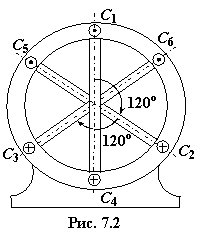
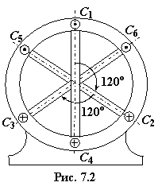

Основными частями АД являются статор (неподвижная часть машины) и ротор (подвижная часть), отделённые друг от друга воздушным зазором (0,3...0,5 мм и до 1,5-2 мм у высоковольтных машин большой мощности). Их сердечники собраны из листов электротехнической стали. На внутренней части поверхности статора и на внешней ротора выштампованы пазы, в которые уложены обмотки. Сердечник статора помещен в корпус, который является внешней частью двигателя. Сердечник ротора укреплён непосредственно на валу двигателя или на ступице, надетой на вал.
Обмотка статора обычно выполняется трёхфазной, состоящей из трёх самостоятельных катушек, сдвинутых в пространстве одна относительно другой на 120° (рис. 7.2). В двигателях низкого напряжения (до 1000 В) концы каждой фазы обмотки статора присоединены к клеммам, которые расположены на щитке, укреплённом на корпусе двигателя, и обозначены соответственно: С1−С4 (фаза А), С2−С5 (фаза В) и С3−С6 (фаза С) (рис. 7.3). Это даёт возможность в зависимости от величины напряжения сети (например, 380 или 220 В) соединять обмотку статора звездой (рис. 7.3а) или треугольником (рис. 7.3б) для того, чтобы в обоих случаях фазное напряжение обмотки было номинальным (в данном примере равным 220 В).



